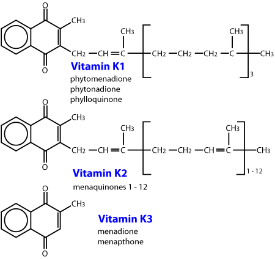
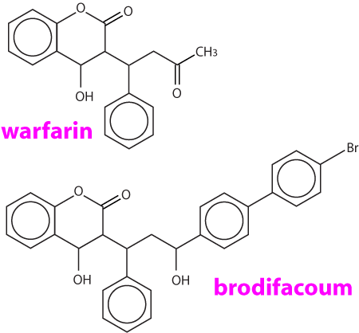
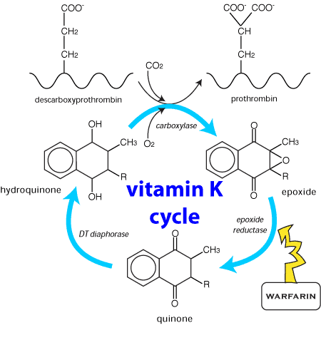
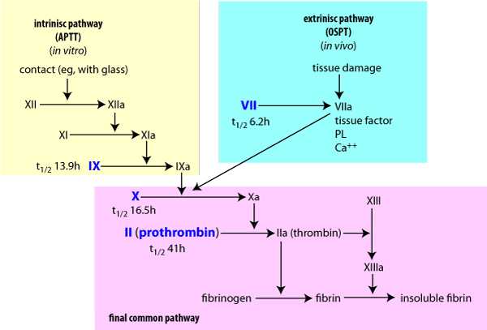
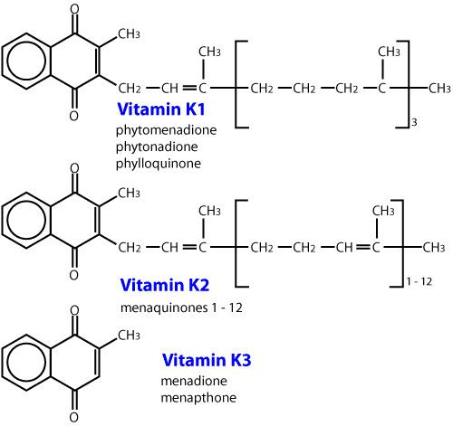

Rodenticides are a common source of poisoning in animals, particularly companion animals. Anticoagulant poisons are responsible for the majority of rodenticide toxicoses because of their availability to household owners and their role in commercial and agricultural rodent control programmes.
The anticoagulant rodenticides were developed from dicoumarol, produced by mouldy sweet clover, which poisoned a number of cattle in the 1940s. A large number of compounds have been developed since then. The more modern ones tend to be more slowly metabolised so that their effects can accumulate in resistant rodents.
Most modern rat and mice poison is anticoagulant.
These toxins are all analogues of vitamin K, and work by interfering with clotting factors which require vitamin K.

The first anticoagulants were the coumarin (warfarin and fumarin) and indanedione compounds developed before 1970. Repeated exposure to these compounds is usually necessary to cause a fatality, and a resistance may be found in some rodents, particularly to warfarin. The coumarins were the most commonly used substances. Some of these commercial preparations included a coccidiostat, sulphaquinoxaline, which also produces a coagulopathy through reduction of the vitamin K dependent coagulation factors. Warfarin is also used therapeutically in humans tp prolong clotting time because it has a suitable plasma half life. The biological half life of warfarin is 15 to 20 days. This prolonged action is probably due to plasma protein binding, slow biotransformation within the liver and/or delayed excretion from the body. The clinical half life in the dog is 15 to 24 hours, with the one stage prothrombin time (OSPT) and the activated partial prothromboplastin time (APTT) not returning to normal until six days following vitamin K1 administration. Coumatetralyl (Racumin, NO RATS & MICE) toxicity has been reported in dogs (LD50 is >35mg/kg). The indanediones include diphacinone, difethialone, chlorophacinone, valone and pindone. Diphacinone has a much longer anticoagulant effect than warfarin, with a half life of 4 - 5 days in dogs. Blood levels of diphacinone can be detected throughout the entire course of the coagulation deficits.
The second generation anticoagulants are effective against warfarin resistant rodents, are more potent (10 to 20 times), have a longer biological half life and a faster action than warfarin. Brodifacoum (Talon) is one of the most commonly used. The plasma half life is approximately 6 days in dogs, but suppression of anticoagulant factors has occurred within two days and regeneration of the vitamin K dependent proteins may not be evident until 33 days after administration of the compound. Brodifacoum exerts its maximum effect between 12 - 15 days following ingestion, and the substance may still be detected at day 24. Its biological half life has been determined to be 20 days. Bromadiolone is structurally similar to brodifacoum, but is less toxic (dog LD50 = 11 15 mg/kg). A number of commercial baits contain this substance. The sensitivity of this compound to light makes the determination of blood concentrations difficult. Another second generation anticoagulant flocoumafen, has been promoted as the most potent and technically advanced rodenticide available. (STORM, Shell Agriculture).

The first generation anticoagulant rodenticides are usually multiple dose poisons, and animals generally require repeated exposure, in order to consume the lethal dose. For warfarin the factors affecting toxicity include; the short half life, the alimentary tract capacity of the compound and the relative affinity to the vitamin K enzyme complex. Indanedione toxicity may also be either acute or chronic, but most cases of poisoning are influenced by the long half life of these compounds. Clinical poisoning due to the first generation anticoagulants is generally observed 4 to 10 days after an ample single dose or an initial exposure to multiple doses.
In the case of the second generation anticoagulants, a rodent feeding on just one occasion may ingest a lethal dose of poison and die 3 7 days later. Second generation rodenticides are known as ‘single feed’ poisons.
In the treatment of domestic animals poisoned by an anticoagulant it is important to remember that certain conditions and drugs may enhance the effect. Renal disease with an associated uraemia, not only results in a decrease in the protein drug binding capacity, but in addition there is often loss of albumin, leading to a greater availability of unbound anticoagulant. Severe liver disease can result in a reduction in the production of coagulation proteins. Drugs which can displace the anticoagulant from albumin include long acting sulfonamides, phenylbutazone, ketoprofen, aspirin and other NSAIDs. Chloramphenicol also enhances anticoagulant toxicity by inhibiting hepatic microsomal activity. Aspirin and other non steroidal anti inflammatory drugs can severely interfere with platelet function. Corticosteroids, nitrofurans, testosterone, anabolic steroids, di phenylhydantoin, acetyl promazine, local anaesthetics, antihistamines and adrenaline should not be used when an animal is suffering from coagulopathy.
Table 32 Comparative Potencies of some common Anticoagulant Rodenticides (to Rattus norvegicus)
| 1st generation anticoagulants | Acute LD50 (mg/kg) | Bait required (g) to deliver LD50 to a 250g rat |
|---|---|---|
| Racumin 57 | 16.5 | 11.0 |
| Warfarin | 58.0 | 58.0 |
| 2nd generation anticoagulants | ||
| brodifacoum (Talon) | 0.26 | 1.3 |
| bromadiolone (Rid Rat Super) | 1.8 | 5.6 |
| flocoumafen (Storm) | 0.25 | 1.3 |
Table 33 Relative Species Toxicities of Anticoagulant Rodenticides
warfarin
| Species | Toxic level Single Dose | Toxic level Repeated Doses |
| Dogs | 5-50 mg/kg | 5 mg/kg for 5-15 days |
| Cats | 5-50 mg/kg | 1 mg/kg for 5 days |
| Swine | 3 mg/kg | 0.05 mg/kg for 7 days |
| Ruminants | 200 mg/kg for 12 days |
indanediones
Single oral LD50 mg/kg
| Generic | Dog | Cat | Pig | Rabbit |
|---|---|---|---|---|
| Diphacinone | 3 | 15 | 150 | 35 |
| Pindone | 2.5 | 150 |
brodifacoum
| Species | LD50 (mg/kg) | Species | LD50 (mg/kg) |
|---|---|---|---|
| Dog | 0.25-3.6 | Rat | 2.8 |
| Cat | 25 | Duck | 2.7-4.6 |
| Sheep | 25-33 | Pig | 0.5-2.0 |
Horses develop a coagulopathy with a low dose of 0.125 mg/kg but not all horses require vitamin K therapy. The coagulopathy may last 3 or more weeks at this dose.
Table 34 Chronic toxicity (LD50>) of pindone*
| LD50 mg/kg | Animal Weight | mg of pindone LD50 | |
|---|---|---|---|
| Rabbits | 0.52 | 1.5 kg | 0.78 |
| Wallabies | 2.0 | 10 kg | 20 |
| Birds of prey | 2.0 | ||
| Dogs | 2.5 | 9kg | 22.5 |
| Cats | 3.0 | 2.5 kg | 7.5 |
| Sheep | 12.0 | 40 kg | 480 |
| Cattle | 12.0 | 400 kg | 48 |
| Humans | 50.0 |
*Dosing was done over several days
Recent advances in the use of second generation anticoagulants has also led to improved safety factors to reduce the chances of toxicity to non target species e.g. children, dogs and cats. Bitrex a very bitter ingredient has been added which while not deterring the rat would be spat out by a child, dog or cat. In addition a blue dye which passes through in the rats faeces would also stain the lips of a dog, cat or child, thus assisting in diagnosis and providing more time to administer an antidote.
There is a marked variation in species susceptibility to the anticoagulants. For example, pindone used commonly as a bait to poison rabbits in urban areas is less hazardous than many other commonly used poisons (see Table 34). Cattle, sheep, goats and deer are relatively resistant, although cattle if pregnant may abort their foetus. Poultry are relatively not susceptible. Dogs and cats are susceptible and while they may not be attracted to cereal baits as such, usually succumb to secondary poisoning through the consumption of intoxicated rodents. Pigs are the most susceptible species and readily become poisoned.
These anticoagulants affect the vitamin K enzyme complex (also referred to as the vitamin K epoxide cycle), which is responsible for the production of functional vitamin K-dependent coagulation factors II, VII, IX and X. See Figure 4. Vitamin K is also necessary for the activation of vitamin K dependent coagulation proteins, which are produced in the liver. It is also involved with the γ carboxylation of many other proteins.

Figure 4 Schematic representation of the vitamin K enzyme complex. Vitamin K enters the cycle as a quinone.
Vitamin K is stored in the liver, in two natural forms; the menaquinones, which are produced by bacterial flora in the gastrointestinal tract, and the phylloquinones, which are obtained from vegetation in the diet. One site of the biochemical lesion caused by anticoagulants is by the inhibition of the epoxide reductase enzyme (Figure 4). This prevents recycling of the epoxide back to Vitamin K, resulting in a rapid depletion of the vitamin K store. The clinical effect is a reduction in the functional coagulation Factors II, VII, IX and X, whose half lives in dogs are 41, 6.2, 13.9, and 16.5 hours respectively. Depletion of these factors prolongs the extrinsic, intrinsic and common coagulation pathways, leading to a coagulopathy.

Figure 5 Blood coagulation pathwaysaffected by coumarin rodenticides.a = activated factor. The factors in blue rely on vitamin K.
The halting or severe reduction in vitamin K recycling means that a continuous source of the vitamin is essential to avoid a coagulopathy. Administration of vitamin K produces a positive biochemical response within 24 hours.
In acute anticoagulant toxicity animals may be presented in a hypovolaemic crisis secondary to massive haemorrhage into body cavities, subcutaneous tissues, and the alimentary, respiratory and urinary tracts. Less severely affected animals show signs of lethargy, pallor of the mucous membranes, anaemia, hyperpnoea, dysnoea, salivation, anorexia, vomiting, haematemesis, epistaxis, bloody faeces and abdominal pain. In warfarin poisoning the animal may show mild to severe lameness as a result of haemorrhage into joint spaces, and the insertion sites of muscle tendons, particularly in pigs. A peripheral neuropathy affecting both motor and sensory pathways, particularly of the hindlimbs has been seen in dogs.
Generalised haemorrhage mainly affecting the subcutis and joints and structures which move in life such as muscle, lungs, heart and intestines. Retroperitoneal haematomata around the proximal poles of the kidneys and associated with the crura of the diaphragm are common in the dog. In some cases jaundice may be present due to absorption of blood pigments.
Always obtain blood samples for a coagulation screen prior to the administration of vitamin K1, as a dramatic change of the coagulation measurements are highly diagnostic for anticoagulant poisoning. Generally collect blood samples into sodium citrate vacutainer blood tubes but check with the laboratory on sample handling. Some laboratories request blood from a normal animal to be submitted at the same time.
After prolonged bleeding (five days) a regenerative anaemia becomes apparent. This is characterised by a large percentage of reticulocytes, and possibly nucleated erythrocytes in the blood smear. The platelet number and morphology is not usually affected, unless excessive destruction occurs following blood loss, resulting in a moderate to marked thrombocytopaenia. This may be assessed by examining the feathered edge of a blood smear for platelet clumps. If there are visible clumps, then there are probably adequate numbers. If not, then a platelet number must be assessed. The normal quantity for a dog is one platelet per 20 red blood cells. The morphology of the platelets should also be assessed. Young platelets are larger than normal and their presence indicates an increased bone marrow production of platelets, implying peripheral platelet consumption. This thrombocytopaenia will quickly return to normal provided the coagulopathy is corrected.
The integrity of the clot formation mechanism can be assessed by a number of routine laboratory tests. The one stage prothrombin test (OSPT)which measures the extrinsic pathway (Factor VII deficiency), being one of the more commonly used tests. Normal range for the prothrombin time is 8-12 seconds. In severe cases prothrombin bleeding time may be greater than 100 seconds. Activated partial thromboplastic time (APTT) measures the intrinsic pathway and the factors affected by coumarin toxicity.
Other bleeding disorders, but the history is usually sufficient to differentiate.
In poisoning by either the first or secondgeneration anticoagulants prolonged treatment will usually be necessary. This is particularly so for the second generation anticoagulants which have a long biological half life.
In animals which are showing advanced clinical signs of intoxication, fresh whole blood transfusion (10 - 15 ml/kg body weight) is recommended accompanied by parenteral (i.e. subcutaneous) administration of vitamin K1(2-5 mg/kg/day). Some clinicians recommend dividing this dose and giving it twice daily.
Where transfusion is not undertaken a reduced dose of vitamin K1 can be administered iv. Care must be taken that this procedure does not induce anaphylaxis and to avoid the risk the dose should given in a 5% dextrose solution and diluted to 1 mg/mL.
Parenteral administration of vitamin K1 should be continued for 1-2 days or until the animal is stable (based on observation and clinical tests such as the one stage prothrombin time assay (OSPT)). Thereafter, oral doses of vitamin K1 are recommended for a period of up to four weeks. The dose can be gradually reduced over this period. The animal must be closely observed for any recurring clinical signs during treatment and for a month after treatment. The animal should be taken off the vitamin K1 for at least 48 hours to measure the OSPT. If the OSPT is normal, a second test in 36 - 48 hours may be necessary. If OSPT is normal at that time then vitamin K1 may be discontinued but advise the clients to keep a close eye on the animal. If the OSPT is prolonged than the vitamin K1 should be reinstituted immediately and continued until the OSPT remains normal. After oral dosing the improvement in clotting times may be delayed for 6-12 hours.
In animals showing early signs of intoxication and where anticoagulant poisoning is highly suspected (e.g. flocoumafen, (Storm)) but in which the condition does not warrant blood transfusion, parenteral administration of vitamin K1 (2-5 mg/kg/day) is recommended initially. This treatment should be followed by the oral administration of vitamin K1 for a further four weeks, with the dose gradually decreasing over this period. Vitamin K1 absorption is enhanced by feeding with fatty foods. Blood samples should be taken where practicable, to monitor coagulation during treatment. Frequent observation should be continued for at least a further month.
If it is only suspected that an animal has consumed anticoagulant rat bait, the induction of vomiting is only recommended when very recent ingestion is suspected. Close observation for a week is recommended and vitamin K1 can be given orally as a prophylactic measure. Where there is strong evidence that rat bait has been ingested, close observation and the monitoring of blood coagulation, as outlined earlier, is recommended. Orally administered vitamin K1 is recommended for a period of four weeks.
Table 35 Summary of treatment of Anticoagulant toxicosis in domestic animals
| Animal Condition | Treatment | ||||
|---|---|---|---|---|---|
| (signs of intoxication) | Induce Vomiting | Blood Transfusion | Parenteral vit K1 | Oral vit K1 | Observe Monitor |
| Severe signs | x | x | x | 1 | |
| Early mild signs | x | x | 1 | ||
| No signs, but suspected bait consumption | 2 | x | 1 | ||
1. Observe for several weeks and monitor blood by the OSPT assay
2. Only where bait consumption is known to have occurred recently
Only vitaminK1 should be used: other forms may be cheaper but do not work in dogs.

Usually good, if treatment is started in time.
Anon. Brodifacoum: Safety in use. ICI Agrochemical Information Bulletin (1984). ICI Tasman Ltd.
Anon. Storm: The latest development in Rodenticide technology. Shell production information. Shell Agriculture, 96 The Terrace, Wellington, New Zealand.
Beasley, V. (1997). A Systems Affected Approach to Veterinary Toxicology. University of Illinois Press.
Beasley, V.R. and Buck, W.B. (1983). Warfarin and other anticoagulant poisonings. Current Veterinary Therapy VII, Ed. R.W. Kirk. W.B. Saunders Company, Philadelphia. 101 105.
Booth, K. (1989). Brodifacoum Poisoning in a Dog. N Z vet J. 37: 74-75.
Grayson, J. and Lane, S. (1998). An unusual case of rodenticide poisoning. Vet Script XI 7:24.
Johnstone, I.B. (1988). Clinical and laboratory diagnosis of bleeding disorders. Vet Clin North Am. 18: 21.
Kirk, R.W. and Bistner, S.I. (1985). Handbook of Veterinary Procedures and Emergency Treatment. 4th ed. W.B. Saunders Company, Philadelphia. 709-719.
McSporran, K.D. and Phillips, C.A. (1983). Brodifacoum poisoning in a dog. N Z vet J. 31:185-186.
Medway, W., Prier, J.E. and Wilkinson, J.S. (1969). A Textbook of Veterinary Clinical Pathology. Williams and Wilkins, Baltimore. 272.
Mount, M.E. and Feldman, B.F. (1983). Mechanism of diphacinone rodenticide toxicosis in the dogs and its therapeutic implications. Am J vet Res. 44:2009-2017.
Mount, M.E., Woody, B.J. and Murphy, M.J. (1986). The anticoagulant rodenticides. Current Veterinary Therapy IX, Ed. R.W. Kirk. W.B. Saunders Company, Philadelphia. 156-165.
Stowe, C.M., Arendt, T.A. and Shulman, J. (1983). Apparent brodifacoum poisoning in a dog. J Am vet Assoc. 182:817-818.
Woody, B.J., Murphy, M.J., Ray, A.C., and Green, R.A. (1992). Coagulation effects and therapy of brodifacoum toxicosis in dogs. J Vet Intern Med. 6 (1) 23-28.
Surveillance (1998) 25(3): 16 Anticoagulant poisoning
Surveillance (1998) 25(4): 14 Anticoagulant poisoning